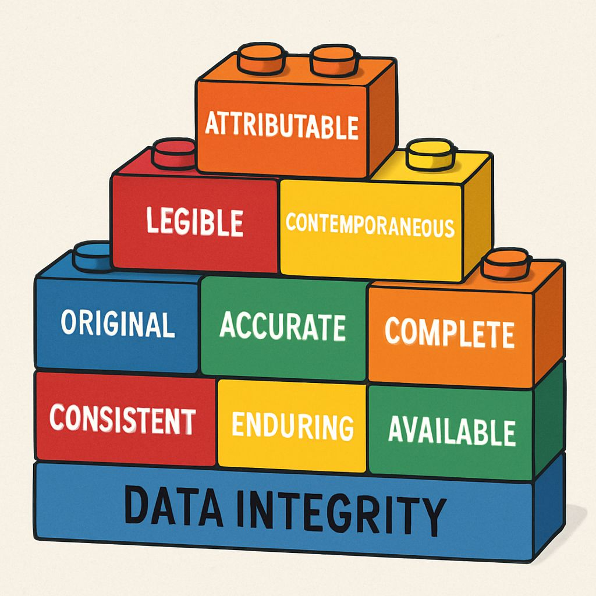

Welcome to your journey as an elite GLP QA Auditor! Forget the old stereotype of QA as just "the police." Your role is far more profound and impactful. You are the guardian of trust, the protector of data integrity, and a crucial partner in ensuring the reliability and credibility of scientific studies.
In this lesson, we'll explore the core purpose of your role, emphasizing the ethical responsibility and the critical need for a sense of urgency in upholding GLP standards.
At its heart, GLP Quality Assurance is about ensuring that non-clinical health and environmental safety studies are planned, performed, monitored, recorded, archived, and reported in a way that allows for accurate reconstruction and reliable interpretation. Why? Because these studies are often critical for regulatory submissions, impacting public health and safety.
Think of data integrity as the bedrock of all GLP studies. If the data isn't reliable, the study is worthless, and any conclusions drawn from it are invalid. Your role is to ensure the "ALCOA+" principles are met:
Any compromise to data integrity can lead to significant regulatory issues, study rejection, and severe reputational damage.
A critical aspect of the elite QA auditor is a profound sense of urgency. This isn't about rushing, but about recognizing that issues, once identified, can escalate quickly if not addressed. Every moment a non-compliance or data integrity issue persists, the risk to the study's validity, and potentially patient/environmental safety, grows.
Scenario: During an in-process audit of a rodent toxicology study, you notice that a technician has recorded animal weights on a scrap piece of paper, intending to transfer them to the official logbook "later."
Old Mindset (Policing): "That's a deviation. I'll write it up at the end of the week."
Elite QA Auditor Mindset (Guardianship with Urgency): You immediately approach the technician, explain the GLP requirement for contemporaneous recording, and help them understand the risk (e.g., paper lost, data transcribed incorrectly, no audit trail). You ensure the data is immediately transferred to the official logbook with proper dating and initialing, and you note the observation for follow-up to ensure retraining or procedural clarification, preventing future occurrences *during the ongoing study*.
Impact of Urgency: By acting immediately, you prevent potential data loss or transcription errors, maintain data integrity for that specific data point, and reinforce GLP principles in real-time, preventing similar issues from occurring for the rest of the study.
Which of the following best describes the primary purpose of a GLP QA Auditor?
Correct Answer: c) To safeguard the integrity and reliability of scientific data for regulatory submissions.
Explanation: While QA might indirectly influence study timelines or costs, its core purpose is ensuring the scientific validity and integrity of data, which is paramount for regulatory acceptance and public safety.
Reflective Exercise: Think about a recent minor deviation or observation you encountered (or imagine one). How might a lack of urgency in addressing it have led to a larger problem? Write down 2-3 specific consequences.
Discussion Point: Discuss with a colleague or mentor: "What is the single most important aspect of data integrity in our specific CRO operations (e.g., toxicokinetics, formulation analysis) and why?"
Listen to a quick summary of this lesson.